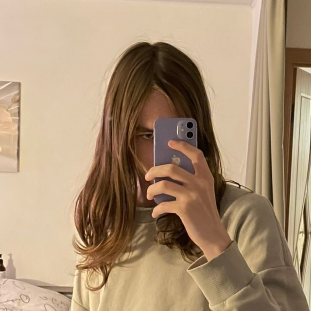

не Настя, а 18-летний студент, фотограф, музыкант и не программист из Вятки. увлекаюсь историей родного города, компами, урбанистикой и игрой на фортепиано.
фанат яблочного шорли, шварца и играт. я вам не ласт.фм. и не спотифай. ☝️ 🦊 #антихайп
лучше пишите в тг ❤️
всё ещё не знаю. зато теперь сайт побаще :3